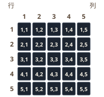
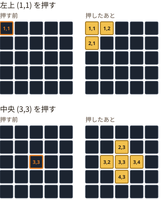
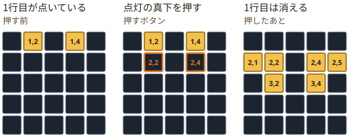
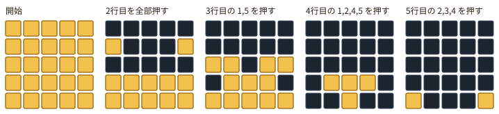
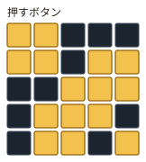

2026-11-15 (Sun.)
\(\def\F{\mathbb{F}}\def\press#1{\mathrm{press}(#1)}\)
盤面は \(5 \times 5\) のボタンで, 各ボタンは点灯か消灯のどちらかである. ボタンの位置は \((i,j)\) と書く. \(i\) は上から数えた行, \(j\) は左から数えた列で, どちらも \(1\) から \(5\) までである. 左上が \((1,1)\) , 右上が \((1,5)\) , 左下が \((5,1)\) , 右下が \((5,5)\) , 中央が \((3,3)\) である.

ボタンを1回押すと, そのボタンと上下左右に隣り合うボタンの点灯が反転する. 斜めは反転しない.盤の外にはみ出した分は何も起きない.
例えば左上 \((1,1)\) を押すと, \((1,1)\) , \((1,2)\) , \((2,1)\) の3つだけが反転する. 中央 \((3,3)\) を押すと, \((3,3)\) と \((2,3)\) , \((4,3)\) , \((3,2)\) , \((3,4)\) の5つが反転する. どちらも, 全部消えている状態から1回押したあとの点灯である.

目的は, 与えられた点灯の状態を, ボタンを何回か押して全部消すことである.
点灯を \(1\) , 消灯を \(0\) と書く. \(\F_2 = \{0, 1\}\) とする.加法は次で定める.
\[ 0 + 0 = 0, \qquad 0 + 1 = 1 + 0 = 1, \qquad 1 + 1 = 0 \]この加法が点灯の反転に対応する.
状態は \(\F_2^{5 \times 5}\) のベクトル \(s = (s_{i,j})\) で表す. \(s_{i,j}\) はボタン \((i,j)\) の状態で, 点灯なら \(1\) , 消灯なら \(0\) である. 全部消えている状態はゼロベクトルである. 初期状態を \(b\) , ボタンを押したあとの状態を \(s\) と書くと, どちらもこの形のベクトルである.
ボタン \((i,j)\) を押したときの効果も, 同じ形のベクトル \(\press{i,j}\) で書く. \((k,\ell)\) 成分は, \((i,j)\) を押したときに \((k,\ell)\) が反転するなら \(1\) , しないなら \(0\) である.
状態が \(b\) のときに \((i,j)\) を押すと, 押したあとの状態 \(s\) は
\[ s = b + \press{i,j} \]である. とくに, 全部消えている状態で \((i,j)\) を1回押したあとの状態は \(\press{i,j}\) そのものである.
同じボタンを2回押すと, その効果は消える. 反転は \(\F_2\) の加法だからである. 押す順序を入れ替えても, 各ボタンが受ける反転の回数の偶奇は変わらない.
したがって, 解に必要な情報は「各ボタンを奇数回押すか, 偶数回押すか」だけである. 偶数回は0回, 奇数回は1回としてよい. 解は \(\F_2^{5 \times 5}\) のベクトル \(x = (x_{i,j})\) で, \(x_{i,j} = 1\) は \((i,j)\) を1回押すことを表す. これは押すボタンの集合と同一視できる. 集合の対称差が, ベクトルの和に対応する.
初期状態を \(b \in \F_2^{5 \times 5}\) とすると, 解くことは
\[ \sum_{i=1}^{5} \sum_{j=1}^{5} x_{i,j} \, \press{i,j} = b \]を満たす \(x\) を求めることである. 左辺は \(\F_2^{5 \times 5}\) 上の和なので, これは \(\F_2^{5 \times 5}\) 上の線形方程式である.
全部消えている状態から始めて, 解 \(x\) のボタンを押すと, 初期状態 \(b\) と同じ点灯になる. 全部消えている状態は \(b = 0\) である. 方程式の右辺がゼロなので, 押しても点灯がひとつも変わらない押し方を求めている. そのような押し方の全体は \(\F_2\) 上の部分空間で, これをこのパズルの解の自由度と呼ぶ. 点灯が残っている状態では, 解が1つあれば, それにこの部分空間を足したものが解の全体になる.
上の行から順に, 点いているボタンの真下を押すと, 2行目以降の押し方は1行目から一意に決まる. この手順をライトチェイス (light chasing) と呼ぶ.
手順は次のとおり.

\((i+1, j)\) を押すと, その上隣である \((i, j)\) が反転する. この時点で \((i, j)\) は点いているので, 押した直後に消える. 同じ行の別の列を押しても \((i, j)\) は反転しない. したがって, \(i\) 行目を消すための \(i+1\) 行目の押し方は, ライトチェイス以外にない.
ライトチェイスが終わると, 1行目から4行目はすべて消えている. 残るのは5行目だけである. 1行目の押し方は \(2^5\) 通りなので, ライトチェイスで作れる押し方は高々 \(2^5\) 通りである.
任意の解は, この形に直せる. 解 \(x\) の1行目を \(a\) としてライトチェイスを走らせると, 2行目以降は \(x\) と一致する. 一致しなければ, その差は1行目を押さずに2行目以降だけで上4行を消す押し方になるが, 各行の消し方は一意なので, そのような差はゼロしかない.
したがって, 解を探す範囲は \(\F_2^5\) の \(a\) で足りる. 解の空間の次元は5以下である.
初期状態は, 1行目から5行目まで全部消えているとする. 1行目を \(a \in \F_2^5\) のとおりに押し, ライトチェイスで2行目以降を決める.
このとき1行目から4行目は消え, 5行目だけが残る. 残った5行目を \(h(a) \in \F_2^5\) と書く.
押す操作は線形で, ライトチェイスの各ステップも「点いている場所の真下を押す」という線形な規則なので, \(h\) は線形である. \(e_1, \ldots, e_5\) を \(\F_2^5\) の標準基底とする.
\[\begin{align*} e_1 & = (1,0,0,0,0) \\ e_2 & = (0,1,0,0,0) \\ e_3 & = (0,0,1,0,0) \\ e_4 & = (0,0,0,1,0) \\ e_5 & = (0,0,0,0,1) \end{align*}\]全部消えている状態から \(e_j\) を押し, 点いているボタンの真下を順に押した結果は次のとおり. 各ブロックの上段が押したボタン, 下段が残った5行目, つまり \(h(e_j)\) である.
\(j = 1\) :
\[ \begin{array}{c|ccccc} \text{press} & 1 & 0 & 0 & 0 & 0 \\ & 1 & 1 & 0 & 0 & 0 \\ & 1 & 0 & 1 & 0 & 0 \\ & 0 & 1 & 1 & 1 & 0 \\ & 0 & 0 & 0 & 0 & 1 \\ \hline h(e_1) & 0 & 1 & 1 & 0 & 1 \end{array} \]\(j = 2\) :
\[ \begin{array}{c|ccccc} \text{press} & 0 & 1 & 0 & 0 & 0 \\ & 1 & 1 & 1 & 0 & 0 \\ & 0 & 0 & 0 & 1 & 0 \\ & 1 & 1 & 0 & 1 & 1 \\ & 0 & 0 & 0 & 1 & 0 \\ \hline h(e_2) & 1 & 1 & 1 & 0 & 0 \end{array} \]\(j = 3\) :
\[ \begin{array}{c|ccccc} \text{press} & 0 & 0 & 1 & 0 & 0 \\ & 0 & 1 & 1 & 1 & 0 \\ & 1 & 0 & 0 & 0 & 1 \\ & 1 & 0 & 1 & 0 & 1 \\ & 0 & 0 & 1 & 0 & 0 \\ \hline h(e_3) & 1 & 1 & 0 & 1 & 1 \end{array} \]\(j = 4\) :
\[ \begin{array}{c|ccccc} \text{press} & 0 & 0 & 0 & 1 & 0 \\ & 0 & 0 & 1 & 1 & 1 \\ & 0 & 1 & 0 & 0 & 0 \\ & 1 & 1 & 0 & 1 & 1 \\ & 0 & 1 & 0 & 0 & 0 \\ \hline h(e_4) & 0 & 0 & 1 & 1 & 1 \end{array} \]\(j = 5\) :
\[ \begin{array}{c|ccccc} \text{press} & 0 & 0 & 0 & 0 & 1 \\ & 0 & 0 & 0 & 1 & 1 \\ & 0 & 0 & 1 & 0 & 1 \\ & 0 & 1 & 1 & 1 & 0 \\ & 1 & 0 & 0 & 0 & 0 \\ \hline h(e_5) & 1 & 0 & 1 & 1 & 0 \end{array} \]\(h\) の線形性から, 任意の \(a = (a_1, \ldots, a_5) \in \F_2^5\) に対して,
\[h(a) = \sum_j a_j h(e_j)\]である. 例えば \[h(1,1,0,0,0) = h(e_1) + h(e_2) = (0,1,1,0,1) + (1,1,1,0,0) = (1,0,0,0,1)\] とわかる.
この5本の和を見ると, 次の2つの関係がある.
\[ h(e_2) + h(e_3) + h(e_4) = 0 \] \[ h(e_1) + h(e_3) + h(e_5) = 0 \]成分ごとに足すと, どちらも \((0,0,0,0,0)\) になる.
与えられた状態 \(b\) を, 次の順で解く.
2が解を持てば, 3の押し方は \(b\) を全部消す. 理由は線形性である. \(a = 0\) でライトチェイスした押し方を \(x_0\) とすると, \(x_0\) は \(b + (0,0,0,0,b^{(5)})\) を作る. ここで \((0,0,0,0,b^{(5)})\) は, 上4行が消えて5行目だけが \(b^{(5)}\) である状態を表す. \(h(a) = b^{(5)}\) となる \(a\) から作った押し方を \(x_a\) とすると, \(x_a\) は全部消えている状態から \((0,0,0,0,b^{(5)})\) を作る. \(x_0 + x_a\) は \(b\) を作る. ライトチェイスは1行目を決めれば2行目以降が一意なので, \(x_0 + x_a\) は, 1行目を \(a\) として \(b\) からライトチェイスした押し方と一致する.
\(h(a) = b^{(5)}\) を, \(a = (a_1,\ldots,a_5)\) と書いて解くと
\[ a_1 h(e_1) + a_2 h(e_2) + a_3 h(e_3) + a_4 h(e_4) + a_5 h(e_5) = b^{(5)} \]である. \(a\) は \(2^5 = 32\) 通りなので, この式を満たす \(a\) は, 残り \(b^{(5)}\) ごとに列挙して調べられる.
全部点いている状態では, 1行目を押さないライトチェイスのあと, 5行目は \((1,0,0,0,1)\) になる. 上で計算した \(h(1,1,0,0,0) = (1,0,0,0,1)\) なので, \((1,1,0,0,0)\) はこの残りを消す1行目の押し方である. この値を上の式の右辺に置いて 32 通りを調べると, 次の4つが解になる.
\[ (1,1,0,0,0), \quad (1,0,1,1,0), \quad (0,1,1,0,1), \quad (0,0,0,1,1) \]このうち \((1,1,0,0,0)\) で, 最初からライトチェイスし直す. 1行目を押さない場合の途中経過は, 次のとおりである.

残った5行目は \(b^{(5)} = (1,0,0,0,1)\) である. 上で列挙した \(a = (1,1,0,0,0)\) で最初からライトチェイスし直すと, 押すボタンは次のとおりである. この押し方で全部消える.

前節の5本の和から, 次の2つの関係が出る.
\[ h(e_4) = h(e_2) + h(e_3), \qquad h(e_5) = h(e_1) + h(e_3) \]したがって \(h(e_4)\) と \(h(e_5)\) は \(h(e_1), h(e_2), h(e_3)\) の和で書ける. この3本は一次独立である. 3本を列に並べた行列の先頭3行は
\[ \begin{pmatrix} 0 & 1 & 1 \\ 1 & 1 & 1 \\ 1 & 1 & 0 \end{pmatrix} \]で, 行列式は \(\F_2\) 上で \(1\) である. したがって \(h(e_1), \ldots, h(e_5)\) が張る空間の次元は3である. \(h\) の像の次元は3, 核の次元は \(5 - 3 = 2\) である.
この関係を使うと, 32通りを全部試さなくても \(h(a) = b^{(5)}\) が解ける. \(a = (a_1,\ldots,a_5)\) と書くと, 定義から
\[ h(a) = a_1 h(e_1) + a_2 h(e_2) + a_3 h(e_3) + a_4 h(e_4) + a_5 h(e_5) \]である. ここに \(h(e_4) = h(e_2) + h(e_3)\) と \(h(e_5) = h(e_1) + h(e_3)\) を代入する.
\[ \begin{align*} h(a) &= a_1 h(e_1) + a_2 h(e_2) + a_3 h(e_3) \\ &\quad + a_4 \bigl(h(e_2) + h(e_3)\bigr) + a_5 \bigl(h(e_1) + h(e_3)\bigr) \\ &= (a_1 + a_5) \, h(e_1) + (a_2 + a_4) \, h(e_2) + (a_3 + a_4 + a_5) \, h(e_3) \end{align*} \]したがって \(h(a) = b^{(5)}\) は
\[ (a_1 + a_5) \, h(e_1) + (a_2 + a_4) \, h(e_2) + (a_3 + a_4 + a_5) \, h(e_3) = b^{(5)} \]である. \(x = a_1 + a_5\) , \(y = a_2 + a_4\) , \(z = a_3 + a_4 + a_5\) と置く. 一次独立なので, 解があるとき \(x, y, z\) は一意に決まる. \(b^{(5)} = (b_1, b_2, b_3, b_4, b_5)\) と書くと,
\[ \begin{align*} y + z &= b_1 \\ x + y + z &= b_2 \\ x + y &= b_3 \\ z &= b_4 \\ x + z &= b_5 \end{align*} \]である. 第4式から \(z = b_4\) , 第1式から \(y = b_1 + b_4\) , 第3式から \(x = b_1 + b_3 + b_4\) が出る. これを第2式と第5式に代入して消すと, 可解条件は
\[ b_2 + b_3 + b_4 = 0, \qquad b_1 + b_3 + b_5 = 0 \]の2本である. この2本は独立で, どちらも成り立つ \(b^{(5)}\) は \(2^{5-2} = 8\) 個ある. これは \(h(e_1), h(e_2), h(e_3)\) が張る空間の大きさに一致する.
条件を満たすとき, 特殊解は \(a_4 = a_5 = 0\) と置いて
\[ a_1 = b_1 + b_3 + b_4, \qquad a_2 = b_1 + b_4, \qquad a_3 = b_4 \]でよい. 一般解は, 次に書く核を足したものである.
核は, 上の2本の関係そのものである.
\[ h(e_2 + e_3 + e_4) = 0, \qquad h(e_1 + e_3 + e_5) = 0 \]この2本は一次独立で, 核の基底になる. 対応する1行目の押し方は
\[ (0,1,1,1,0), \qquad (1,0,1,0,1) \]である. どちらも, 全部消えている状態に対してライトチェイスすると, 5行目まで含めて全部消える. つまり, 状態を変えない非自明な押し方が少なくとも2次元ある.
したがって, 方程式 \(\sum x_{i,j} \press{i,j} = b\) の係数行列は, 列が25本, 核が少なくとも2次元なので, 階数は23以下である. 解がある \(b\) は全体の \(2^{23}\) 個以下, 割合にして \(1/4\) 以下である.
ライトチェイスで解ける状態は, 残った \(b^{(5)}\) が \(h\) の像に入るものだけである. 像は8個なので, 1行目を押さないライトチェイスのあとで解がある割合は, 残差がこの8個のどれかに落ちる場合に限られる. 全部の初期状態 \(2^{25}\) 個のうち, 実際に解を持つものは \(2^{23}\) 個で, ちょうど \(1/4\) である. これは核の次元がちょうど2であることと一致する. 上の「23以下」「 \(1/4\) 以下」は, この数え上げで等号になる.
1行目だけを見ると, 自由に決められるのは3成分ではない. \(a_4\) と \(a_5\) を自由に選ぶと, \(x, y, z\) から
\[ a_1 = x + a_5, \qquad a_2 = y + a_4, \qquad a_3 = z + a_4 + a_5 \]で残りの3成分が決まる. 自由なのは2成分で, 特殊解を1つ決めれば, 解は高々4個である.
「3つのボタンだけを考えればよい」は, 次の意味で成り立つ. \(h(e_4)\) と \(h(e_5)\) は \(h(e_2) + h(e_3)\) と \(h(e_1) + h(e_3)\) なので, \(a_4 = a_5 = 0\) に制限しても \(h\) の像は減らない. 解が存在する状態には, \(a_4 = a_5 = 0\) である解が必ず1つある. その解の1行目で実際に押すかもしれないのは, 1列目, 2列目, 3列目の3つだけである. 残りの2列は, 解の個数を4個まで増やすときにだけ押す.
全部点いている状態では, 特殊解 \((1,1,0,0,0)\) に核の2本を足して, 1行目は次の4通りになる.
\[ (1,1,0,0,0), \quad (1,0,1,1,0), \quad (0,1,1,0,1), \quad (0,0,0,1,1) \]4通りとも, ライトチェイスを続けると状態は全部消える.